User guide
Getting the most from AirReveal
1Welcome to AirReveal
AirReveal shows you what's around you, on one map: the planes in the sky above you, the landmarks below, and your own flights. On board, it follows your plane by GPS and tells you what you're flying over, even in airplane mode.
Start in three steps:
- Look at the map. It opens on where you are, with the planes flying over you and the places nearby. Tap anything on it.
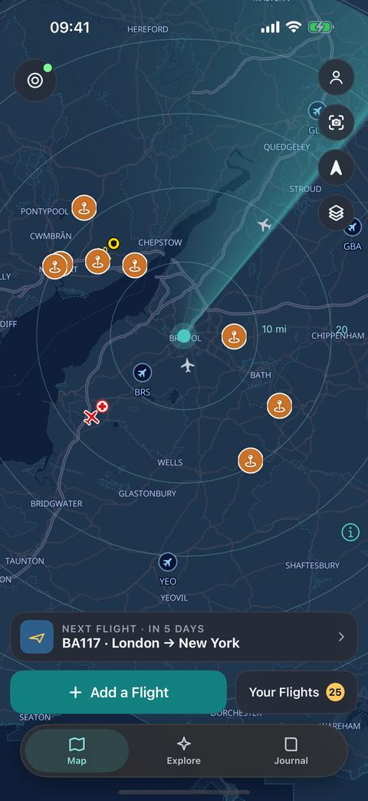
- Add your flight. Tap Add a Flight at the foot of the map, type your flight number and tap Find. Its airport glows gold with a countdown, and its maps download on Wi-Fi so they work in the air.
- On the day, tap Start Live. Allow your location (Always, so it keeps going while your phone is locked), then look out of the window.
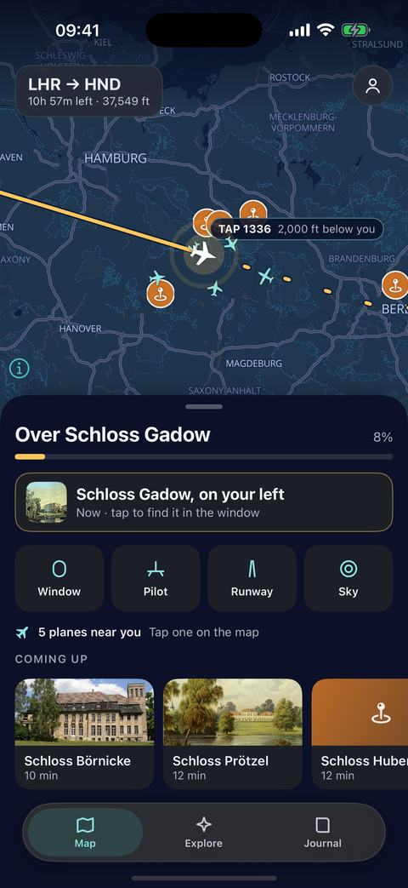
You don't need an account, in-flight Wi-Fi or a mobile signal in the air. Everything else in this guide is extra.
2The map
The map is AirReveal's home. Tap anything on it and its card rises from the foot of the screen: swipe the card up for more, and down to put it away.
- Planes: the planes around you, each shaped like what it is (an airliner, a turboprop, a business jet, a light aircraft, a fast jet or a helicopter). See Planes in the sky.
- Places: orange pins for the landmarks near you, with or without a signal. See Places below.
- Airports: small blue planes with their codes. The big hubs show from anywhere, and every airfield as you zoom in.
- Your flights: your next flight's airport glows gold with a countdown. Your Flights at the foot of the map draws them all.
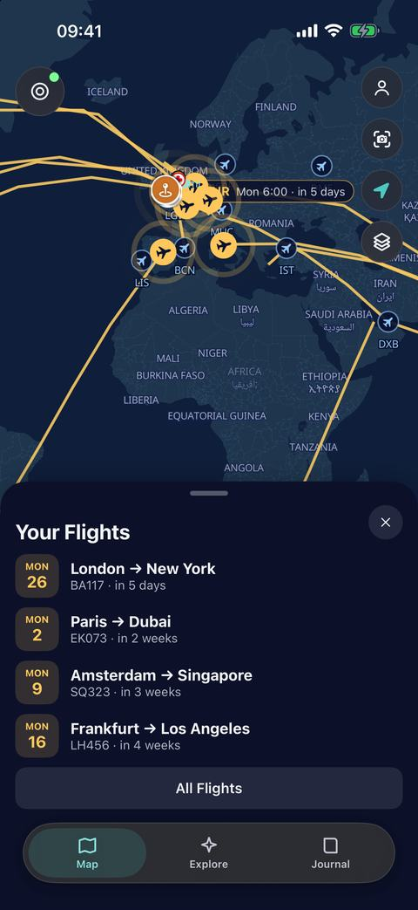
The buttons at the top right: your Profile, the camera, the compass (tap it to turn the map with you, again for north up; moved away, it shows an arrow that brings you back) and On the Map, to choose what's shown and the map's look.
The header at the top left counts the planes above and places below. Tap it for every plane, nearest first.
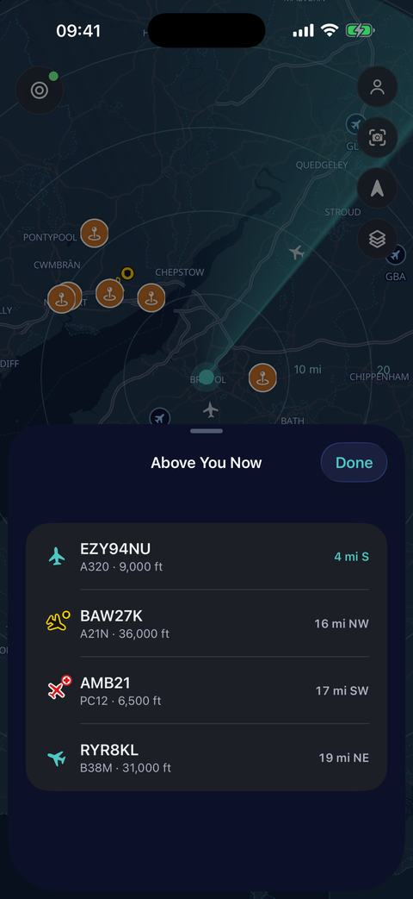
Quiet where you are? Tap a busy airport, then Look Around Here: the map moves there, with its planes and places. Back to Me, in the gold pill at the top, brings it home. Look Around is part of Live Sky in AirReveal Pro.
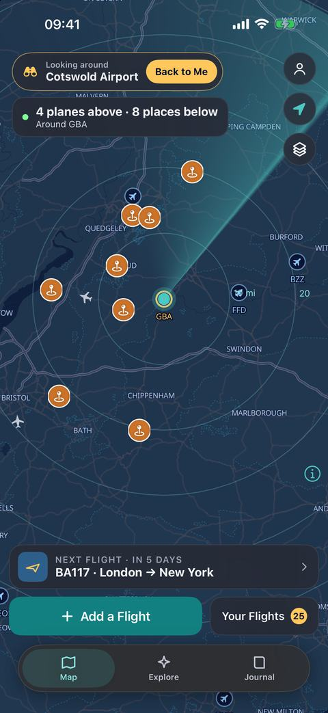
3Planes in the sky
With a signal, the map shows the planes flying around you, with rings every 10 miles (or 10 km).
- Tap a plane to reveal it: its airline, where it's going, how high and how fast. Swipe the card up for its photo, its route and the aircraft's specs. Every plane you reveal goes in your Sky Logbook.
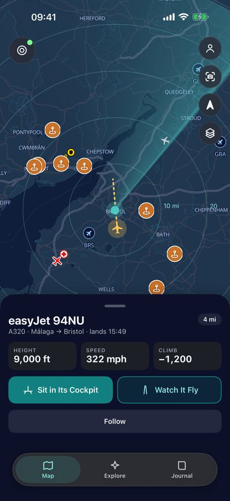
- Follow it. Tap Follow and the map keeps it in the middle, with its trail, for its whole flight. A pill at the top says you're following it; Tell Me When It Lands sends a notification when it does.
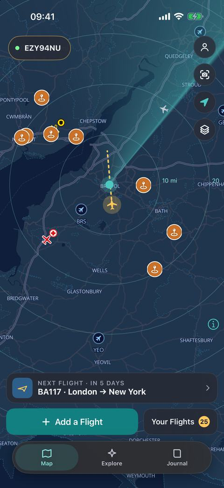
- Find it in the sky. Tap the camera button and hold your phone up: the planes are labelled where they are, and the landmarks on the horizon too. If a label sits beside its plane, drag it into place with Line Up.
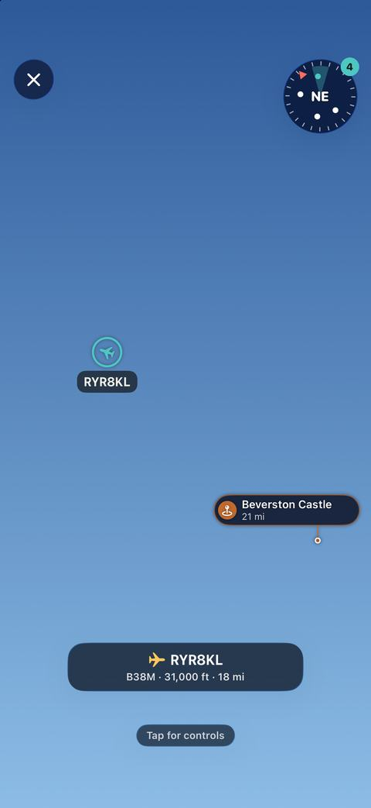
- Sit in Its Cockpit shows the way ahead from the plane's own flight deck, with its instruments reading what it sends. Drag to look around, and tap a screen to see it big.
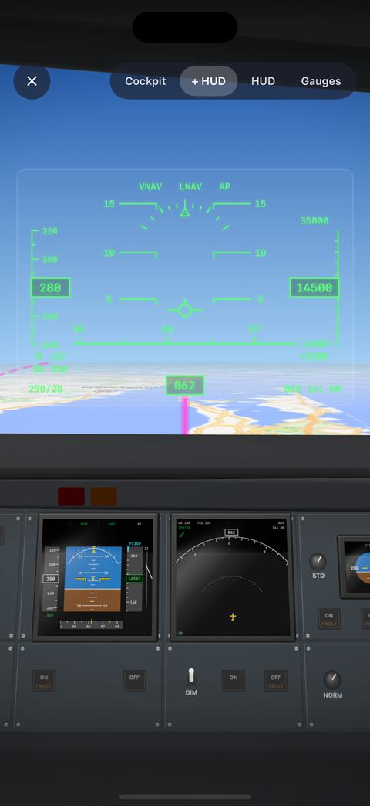
- Watch It Fly shows the plane in 3D, in its shape and its airline's colours: at the airport as it taxis, takes off and lands, and in the air from behind or above.
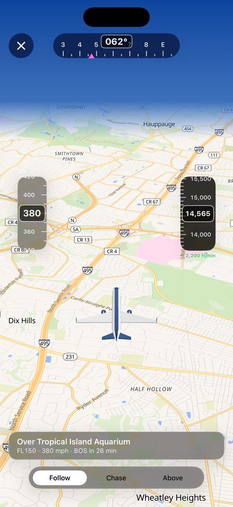
Free and Pro. Without Pro the planes update every minute, from a community feed with a daily limit (if it runs out, the header says when they're back). Live Sky in AirReveal Pro updates them every few seconds with no limit, and adds the cockpits, Watch It Fly and Look Around.
Police, air ambulance, coastguard and military aircraft show in their own colours. Positions come from ADSB.lol, and routes can be out of date.
4Places below
The orange pins on the map are the landmarks around you: castles, cities, mountains, lakes, rivers, islands and UNESCO World Heritage Sites. They're on your phone, so they work without a signal.
Tap one for its card, then Its Story for its page: a photo, What You're Seeing, its encyclopedia article, Read Aloud and a quick quiz.
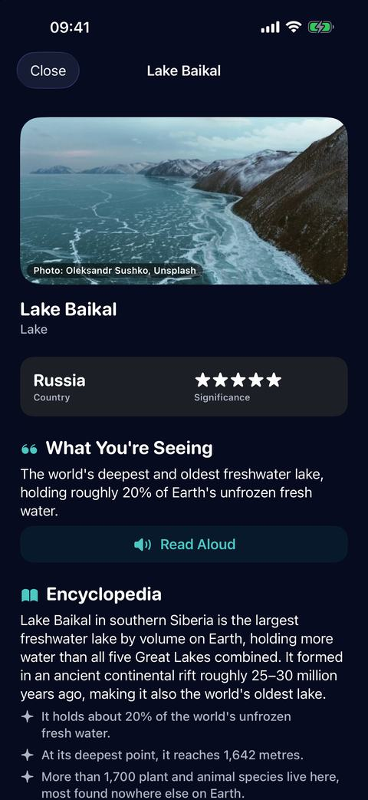
In the air, the Explore tab lists what's overhead now, what's coming up (with which side of the plane to look and how many minutes away) and what you've passed. Places you fly past go into Your Collection.
Photos and articles come from Wikipedia and Wikimedia Commons when you're online, credited on each page, and are kept for the air.
5Before you fly
- Add your flight. Add a Flight at the foot of the map: type the flight number and tap Find, or choose the airports yourself. Touch and hold Add a Flight to add flights from your calendar.
- See the route. Tap your flight's gold airport and the route draws itself, with Fly the Route Now to fly it ahead of time and the Flight Page, which says the Best Side to Sit and what you'll see from each side.
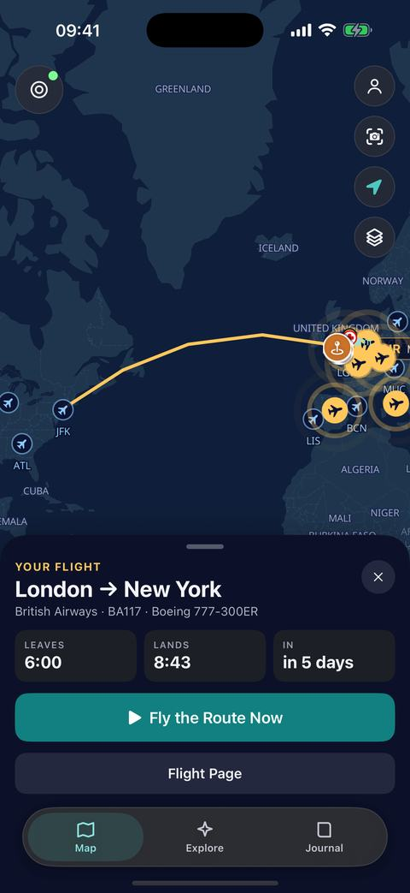
- Let it download. Its maps and landmarks download on Wi-Fi by themselves. On the day, an amber warning on the map shows anything still to do, until your flight's card says Ready for Take-off.
All your flights are in My Flights (All Flights under Your Flights): search, sort, download or share them, Import Past Flights from Flighty, myFlightradar24 or OpenFlights, or Add From Calendar.
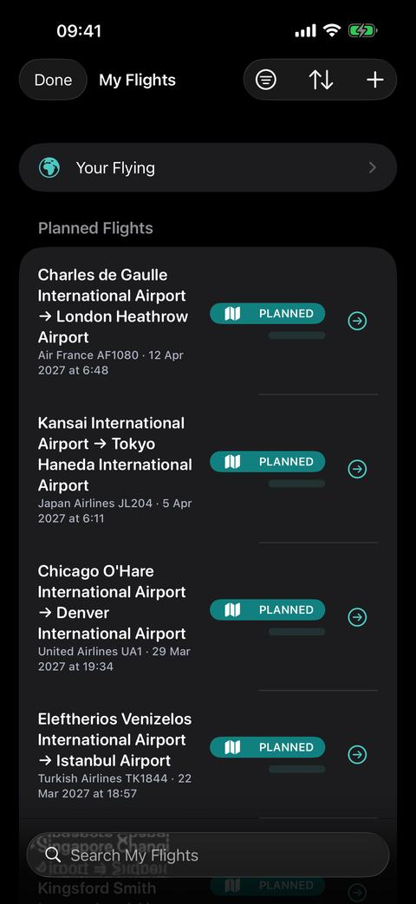
6On board
- Start Live. On the day, your flight's card has Start Live (after a few seconds it folds into a button: tap it, or touch and hold for more). Your first Live flight is free; after that Live tracking is part of AirReveal Pro.
- Airplane mode is fine. GPS reads satellites, not phone masts. Deep in the cabin it can take a minute to find you: hold your phone near the window.
- Follow along. The map follows your plane, with a headline such as "Over Lake Baikal", the place to look at now and which side it's on.
Your flight's panel opens four views:
- Window: hold your phone up to the window and the landmarks outside are labelled. The shutter takes a photo; the red button records a video or a timelapse, with the labels on.
- Pilot: the way ahead as if from the flight deck, with your real height, speed and heading.
- Runway: your own plane in 3D on a model of the airport as it taxis, takes off and lands, then above your route.
- Sky: the camera, for the planes around yours when the plane has Wi-Fi.
Start Live Activity puts your flight on the Lock Screen and in the Dynamic Island. Always follow the crew: AirReveal is for enjoying the journey, not a flight-status or safety service.
7After you land: your Journal
When you land, Your Flight, Revealed shows the countries you crossed, how far you flew and the sights you saw. Share Your Recap makes a picture card.
The Journal tab keeps every trip, with its route on a map, its highlights and Replay This Flight.
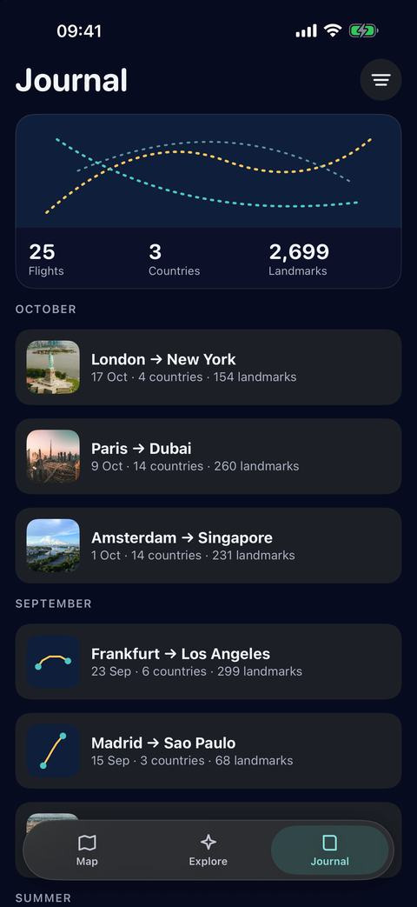
- Your Flying adds up everything you've flown: flights, distance, time in the air, countries, airlines and aircraft.
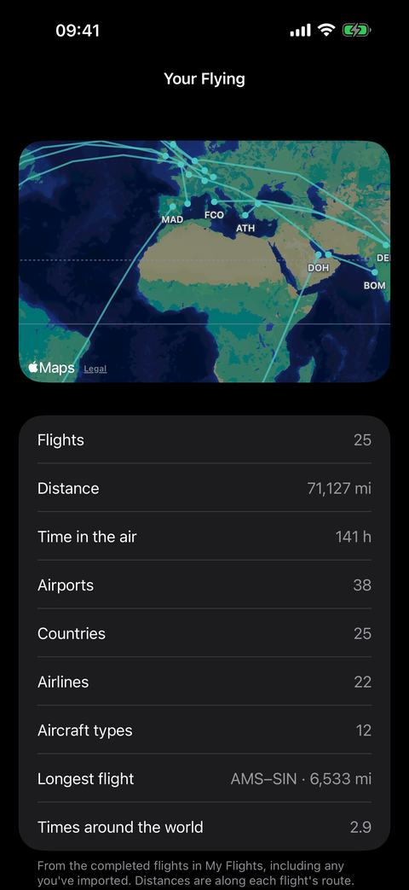
- Passport: a stamp for every country you fly over, even if you never land there.
iCloud Sync copies your flights to your other Apple devices.
8Games and your Logbook
All of these are optional: turn any of them off in Profile › Settings › Games, and your progress is kept.
- Sky Logbook: every plane you've revealed, your personal bests, and the types and airlines you've seen.
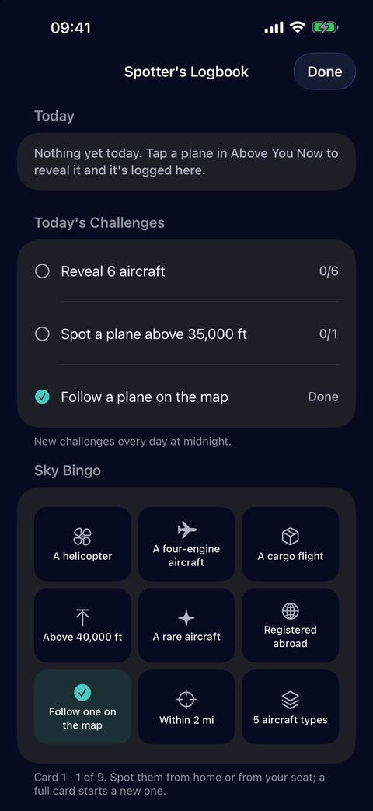
- Today's Challenges and Sky Bingo: things to spot from home or your seat, new every day. Each flight has its own Discovery Bingo too.
- Guess the Airline: in the camera, guess who's flying the plane above you, for one or two players. Keep Airlines a Mystery (in Games) hides the airline on every plane's card until you've guessed.
- Achievements, levels and XP for your discoveries, quizzes and flights.
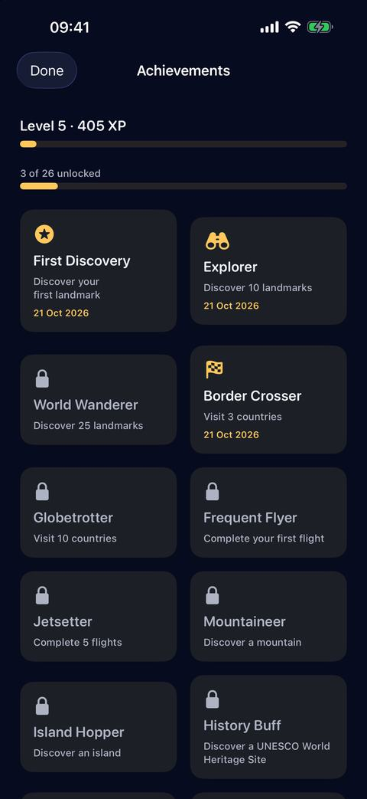
9Alerts, Apple Watch and Siri
- Spotter Alerts tell you when an aircraft you're watching for, such as an A380, comes near, even with AirReveal closed (Profile › Settings › Alerts).
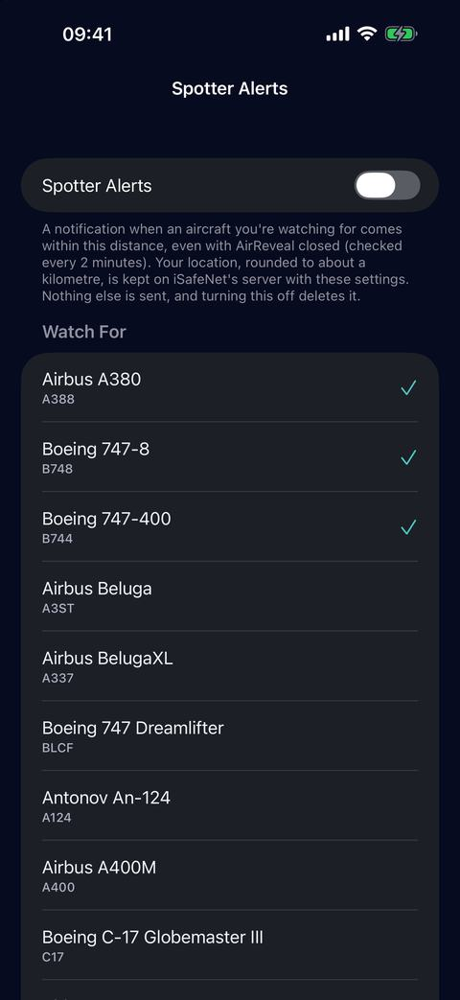
- Tell Me When It Lands, on a plane you follow, and alerts for emergency aircraft near you.
- Apple Watch: the radar of the planes around you, the plane you're following and your own flight.
- Widgets for the Home Screen and Lock Screen, and Live Activities for your flight or a plane you follow.
- Siri: ask "What's flying above me in AirReveal", "What's below me in AirReveal" or "How long left on my AirReveal flight". They're in the Shortcuts app too.
To check Spotter Alerts while the app is closed, your location, rounded to about a kilometre, is kept on iSafeNet's server with your choices. Turning them off deletes it.
10Settings, Free and Pro
Tap the round button at the top right of the map for your Profile: your Passport card, your Achievements and Sky Logbook, then Settings.
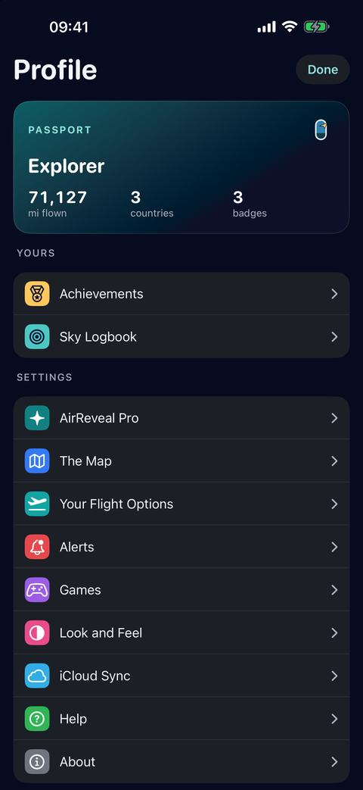
Each group of Settings opens its own page: The Map (its look, Night Mode, the planes and places on it, and how far it looks), Your Flight Options, Alerts, Games, Look and Feel (appearance, colour theme and language), iCloud Sync, Help and About.
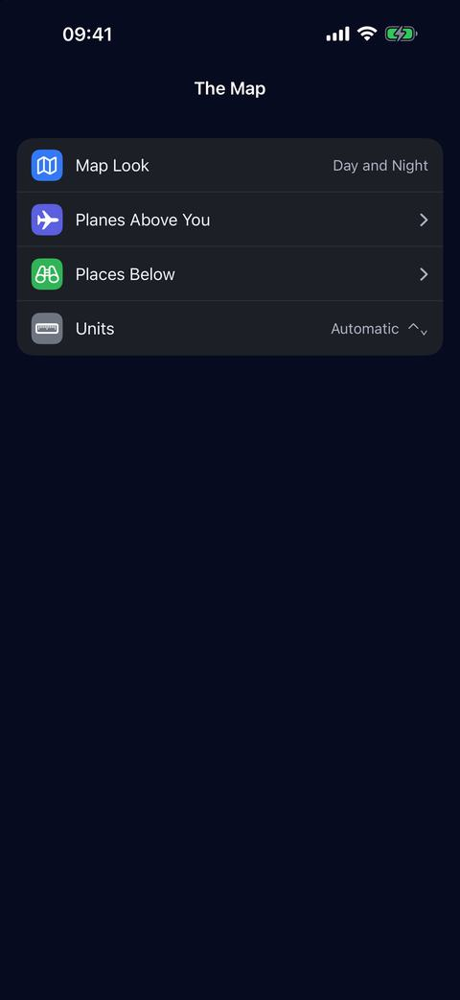
AirReveal is free to plan and preview as many flights as you like, with your first Live flight, the planes above you every minute, the places, airports, Logbook and games.
AirReveal Pro adds Live Sky (planes every few seconds with no daily limit, the cockpits, Watch It Fly and Look Around at any airport) and Live tracking of every flight. Choose weekly, monthly or yearly at the top of Settings.
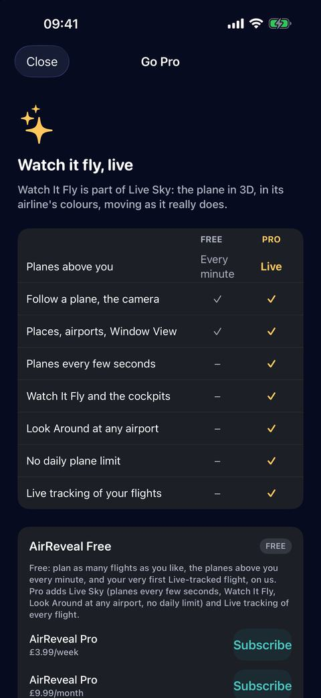
Bought Pro but it isn't showing? Tap Restore Purchases there.
11If something isn't working
The plane isn't moving on the map. Check that location is allowed in Settings › Privacy & Security › Location Services › AirReveal, then hold your phone near the window for a minute.
No maps or landmarks in the air. The flight wasn't downloaded before take-off. You can still follow along; next time, let it download on Wi-Fi first.
No planes on the map. The planes need a connection, and Live Monitoring on in Profile › Settings › The Map › Planes Above You. Over quiet country there may simply be none near.
The header says Planes back at… Today's free planes are used up; they come back at that time. Live Sky in AirReveal Pro has no daily limit.
The camera's labels are off to one side. Use Line Up to drag them onto the planes, or move your phone in a figure of eight, away from metal.
No alerts or landing notifications. Allow notifications in Settings › Apps › AirReveal › Notifications.
Still stuck? Email info@isafenet.app, or see Support in Profile › Settings › About, where Data and Credits lists every source AirReveal's maps, places and planes come from.